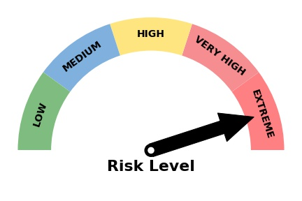
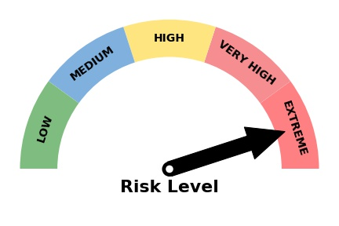

SPF RECOMMENDATION
SPF RECOMMENDATION
RECOMMENDATIONS BASED ON THE CURRENT RISK LEVEL
If you are unsure what skin type you have, we suggest you to check your skin type with just 3 simple questions from our Quiz.


 

Current UV Index (Local Weather): {{current_value}}
Chosen UV Index (Your Selection): {{selected_value}}
Low: You have 0-10% chance to Burn under the Sun.
Medium: You have 10-20% chance to Burn under the Sun.
High: You have 20-30% chance to Burn under the Sun.
Very high: You have 30-40% chance to Burn under the Sun.
Extremely high: You have greater than 40% chance to Burn under the Sun.

Please follow Melanoma Institute Australia (2019) strict guidelines to using sunscreen in Australia to ensure that you are well protected:
Using sunscreen with the highest SPF. Currently in Australia, the highest is SPF50+.
Your sunscreen should be broad-spectrum. Meaning it will protect you from both kinds of Ultraviolet (UV) rays, UVA and UVB.
Applying the right amount of sunscreen. We found that we only use about 25% to 50% of the required amount of sunscreen. Using too little sunscreen reduces the sun protection factor significantly.
All exposed skin must be thoroughly covered with sunscreen.
If you are doing water related activities, ensure that you use a waterproof sunscreen and reapply it at least 2 hours regularly.